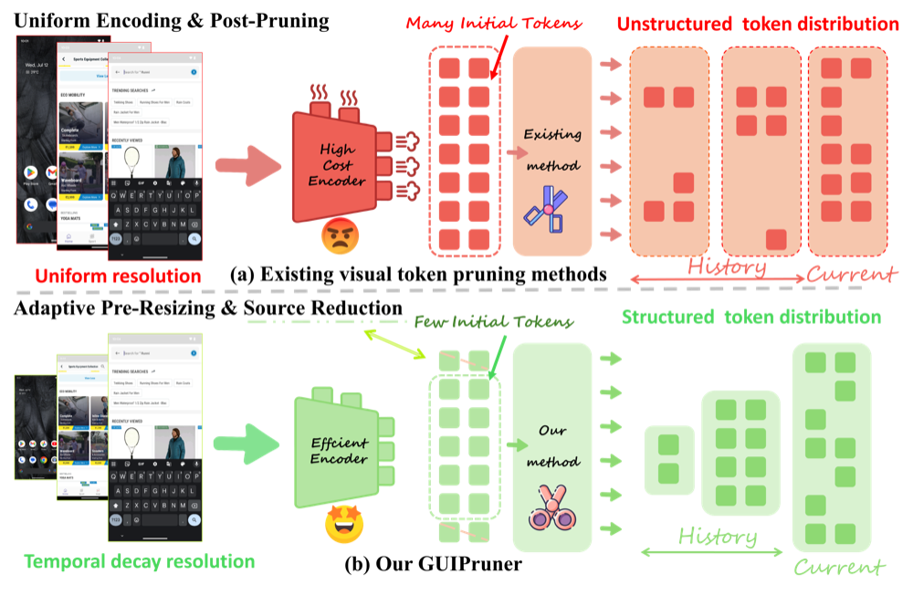
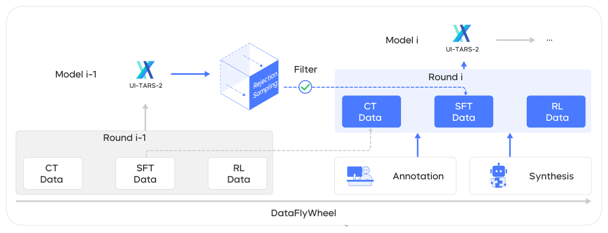

一、研究背景和选题意义
三个核心挑战

看得贵：视觉模态的高分辨率截图 × 长历史，token 冗余

测不准：只看结果判分，通过率虚高 10–20 pp

练不出：训练依赖大规模数据飞轮与可验证环境
选题意义：理论上，厘清文本与视觉两类模态在通用智能体中的分工，为长程多模态决策提供高效感知与可信度量；应用上，服务软件开发、运维、数据分析、办公等数字工作自动化，评测、环境与数据可直接用于基座模型后训练。
核心问题：如何让智能体高效地看、被准确地测、在可验证的环境中练出文本 + 视觉的混合能力？